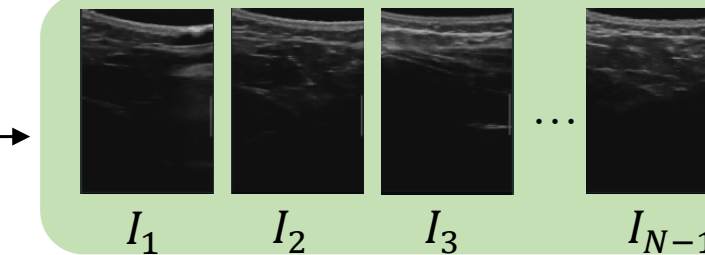
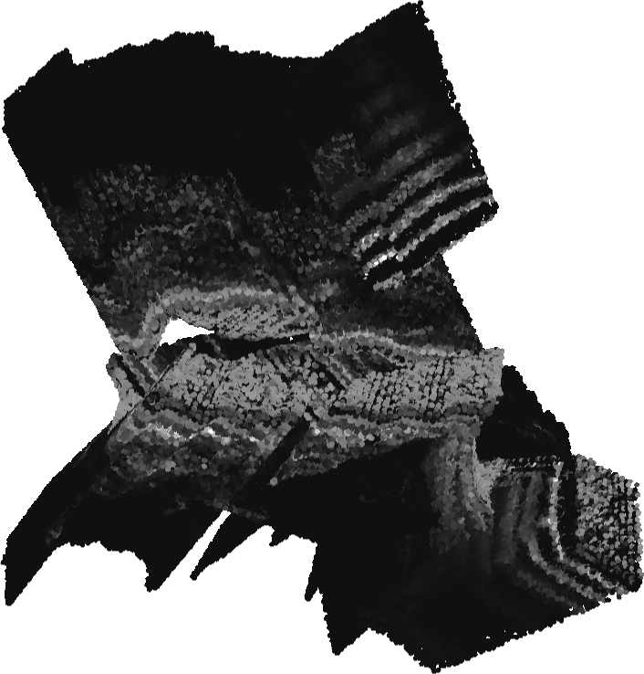
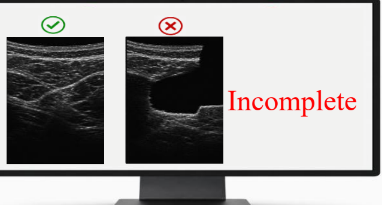
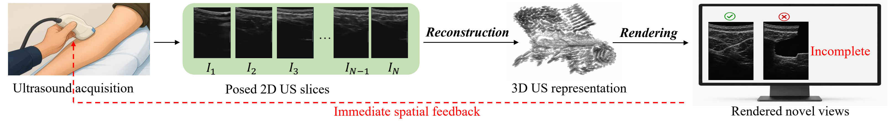
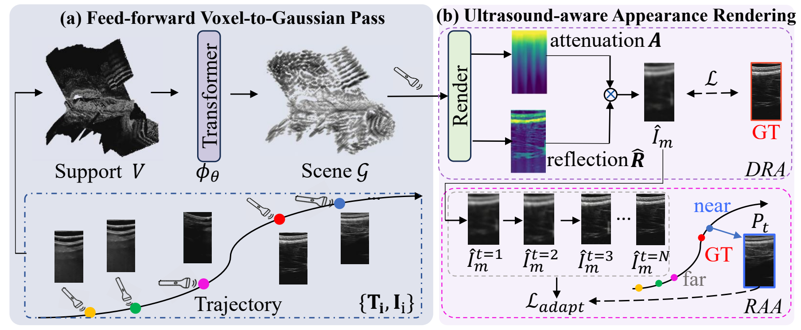
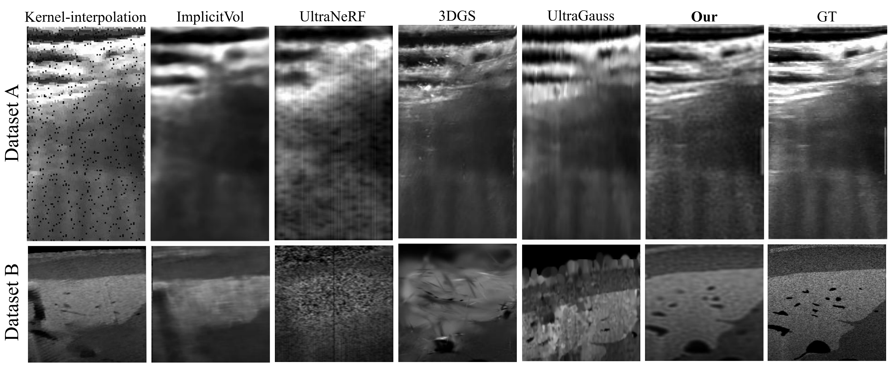

Research Project
UltraVoxelGS
Making hidden 3D coverage visible during 2D ultrasound scanning.
A voxel-first feed-forward Gaussian Splatting framework that reconstructs tracked ultrasound slices into a 3D representation fast enough to support live spatial feedback.
Fast reconstruction
Faithful rendering
Evidence-aware feedback


10.04sscene representation construction
24.29PSNR on real tracked scans
0.8329SSIM with RAA
1600+input frames without retraining
Problem
2D ultrasound shows slices, not 3D coverage.
During scanning, the operator sees local 2D frames and mentally infers the missing 3D anatomy. Coverage gaps can remain invisible until they are reconstructed and rendered from new viewpoints.

Method
First build shared support. Then predict and render.
UltraVoxelGS makes feed-forward ultrasound GS possible by separating support construction, Gaussian prediction, and ultrasound-aware rendering.

Lift all posed slices into a shared voxel support so reconstruction scale is controlled by spatial support rather than raw frame count.
Decouple anisotropic reflection from cumulative attenuation to respect ultrasound image formation.
Use nearby observed slices as appearance anchors while keeping the global Gaussian geometry fixed.
Results
Feed-forward reconstruction with optimization-level fidelity.
The page keeps results visually subordinate to the story, but the evidence is still concrete: real qualitative comparisons, quality-time behavior, and DRA/RAA analyses from the study figures.

Clinical Vision
From hidden coverage to actionable re-scan guidance.
The intended interface is not just a prettier 3D reconstruction. It is evidence-aware feedback: reveal the uncovered region, then guide the operator to scan what is missing.